人类对血液循环的研究，始于对血液的认识。而人类对血液的重要性的认识，自古有之。古代血液被视为神物。古埃及人把血液看做人类灵魂的载体。罗马人认为血液可以传递能量，据说剑客们曾饮用过战死的对手的血液。
考古学家在美索不达米亚（6000年前）发现了泥版文书，上面的文字是神职人员撰写的医学文章，认为血是生命机能的源泉，肝脏作为血液的汇集中心而成为生命的大本营。因此，古代英雄们在即将进行大事活动时，用动物的肝脏来占卜吉凶。
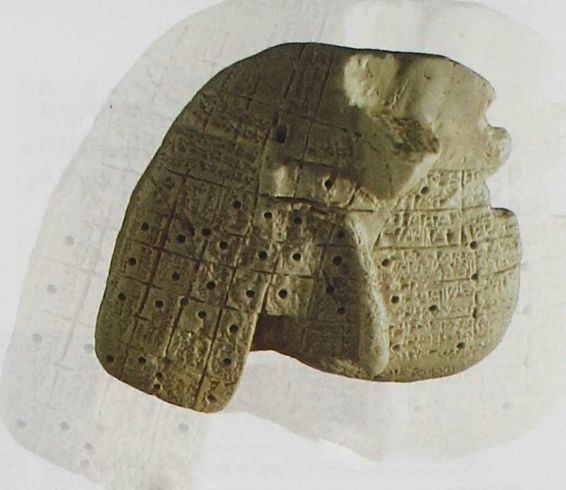
●一个羊肝的黏土模型，用作占卜。制于公元前1830—前1530年巴比伦第一王朝时期。
古希腊医师希波克拉底（Hippocrates，约公元前460—前377）提出了人体的“四体液病理学说”：人体由血液、黏液、黄胆汁和黑胆汁四种体液组成。他认为脉搏是由血管运动引起的，而且血管连通心脏；认为原生的热能是生命的基本条件，当热能消失时，人也就死亡了。为了将热量维持在稳定的水平，人就必须通过器官来呼吸，通过血液进行循环，但是他对静脉和动脉未加区别。
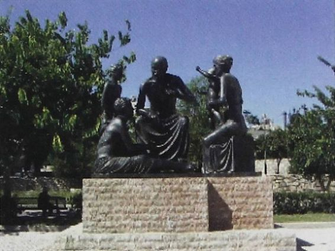
●希腊科斯岛港口的希波克拉底雕像（正中间），据说科斯岛是其出生地
●科斯岛上的希波克拉底之树，大理石基座上刻有希波克拉底誓言——建立了高度的医生职业行为标准。
爱琴海的科斯岛上至今仍耸立着一棵巨大的希波克拉底之树，据说从公元前5世纪末开始，当地有志于医学的年轻人都要在这棵树下举行医学入门仪式，念诵著名的希波克拉底誓言。
四体液病理学说认为：人体内含有多种不同的液体，某种体液过多或不足都会引起疾病。因此，包括“医学之父”希波克拉底在内的许多古希腊医生都采用放血疗法。
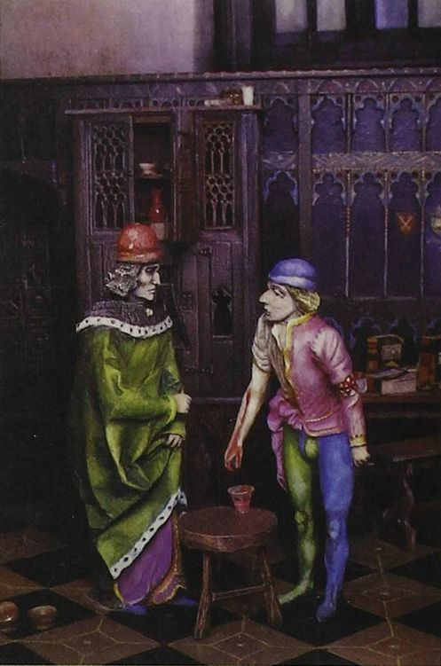
到中世纪，“放血疗法”仍在盛行。持续经历了中世纪、文艺复兴时期、启蒙运动时期，延续到第二次工业革命。中世纪的澡堂工和理发师除干自己的本行外，还施行一些受当时医生鄙视的外科小手术，如放血疗法。现代发廊门口红白相间的立柱，即代表了白色的绷带和红色的血。上图显示的是病人接受放血疗法。
古希腊著名学者、哲学家亚里士多德（Aristotle，公元前384—前322）被誉为仅次于神的权威。他首次提出，血是在肝脏里由食物转化而来的，并通过血管送往全身，在通过大脑的地方冷却下来。他还认为人体血管内充满着空气。
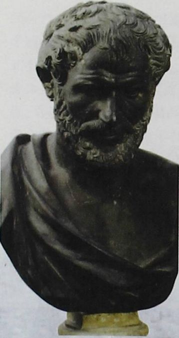
●图是陈列在意大利那不勒斯国家博物馆的亚里士多德半身雕像
●在这幅18世纪的版画中，亚里士多德（左一）一边专注地观察动物，一边做笔记或者画图。
古希腊医生、解剖学创始人赫罗菲拉斯（Herophilus，活跃于前300—前250）著有《论解剖学》等，在解剖人体时最早发现了血管，并第一个区别了动脉和静脉：动脉有搏动，静脉没有搏动。比希波克拉底前进了一步。赫罗菲拉斯曾用滴漏测量单位时间内人的脉搏的次数，但他没有将脉博和心跳联系起来。右图是赫罗菲拉斯用过的滴漏。
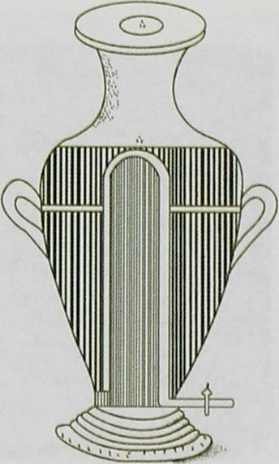
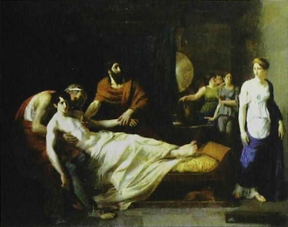
●据说埃拉西斯特拉图斯最先注意到用脉博甄测谎言。传说当时王子安条克一世（Atlochus Ⅰ Soter）与刚同国王尼科特（Nlcator）结婚不久的年轻漂亮的王后斯瑞尔德娜爱斯（Stratonlce）（右）坠入了爱河。王子变得消瘦而憔悴，国王以为王子得了可怕的疾病。图是埃拉西斯特拉图斯一边与王子谈论王后的美德一边为他把脉，之后，告诉国王王子没有生病，只是试图隐藏对王后的强烈感情。
古希腊埃拉西斯特拉图斯（Erasistratus，约前304—前205）认为身体里任何组织都由静脉、动脉和神经为其服务；认为神经是空心的，输送“强健有力的精神”；动脉输送一种称为“生气和活力”的气；静脉则从心脏输送血液；第一个精确地描述心脏的半月瓣、三尖瓣和二尖瓣等结构。
古罗马医学家盖仑提出了血液运动的理论。他认为动脉输送的是血液而不是气，神经来源于大脑。把心脏分为两半的中隔上有人们肉眼看不见的小孔，血液穿流过这些小孔，从心脏右侧到心脏左侧，再流经肺部。他也错误地认为血液源源不断地在肝脏中产生，在流经全身的过程中一部分转变成组织成分，另一部分蒸发了。此后的1000多年里，人们都把他这种血液理论奉为真理。
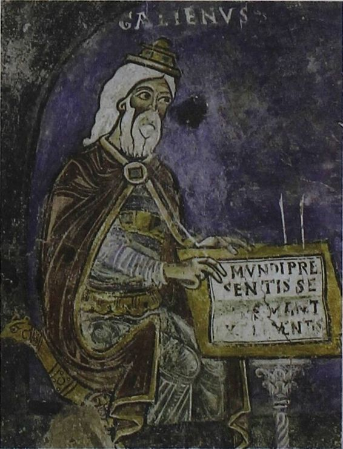
●阿纳尼大教堂天花板壁画中的盖仑（Claudius Galen，约129—200）画像
13世纪，波斯医生伊本·安纳菲斯（Ibn alNafis, 1213—1288）第一个提出血液从右心室经过肺部流向左心室的肺循环理论。对盖仑的血液运动理论进行了积极的批判：安纳菲斯发现心脏左右心室之间的隔膜上没有盖仑所设想的那种孔道，血液不可能从右心室直接流至左心室。遗憾的是他的学说在当时并未引起人们的重视，被淹没了700多年，直至1925年他的论文复制本（见下图）才在德国国家博物馆被发现。
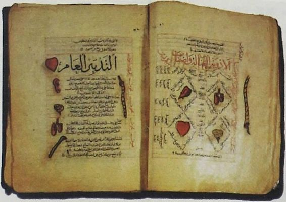
哈维可谓生逢其时，1543年，哥白尼的《天体运行论》和维萨里的《人体的构造》这两本书的出版，拉开了近代自然科学革命的序幕：哥白尼的日心说动摇了西方人信奉了上千年的、被教会推崇的托勒密学说；曾被视为权威的盖仑的血液运动的理论也因《人体的构造》的发表而遇到了挑战。
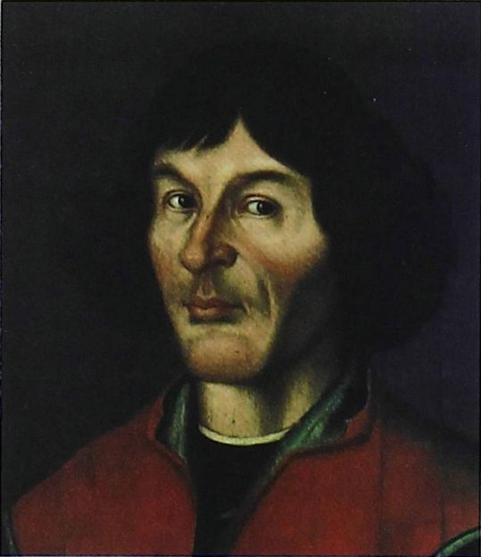
●哥白尼（Nicolaus Copernlcus, 1473—1543）
1543年，比利时医生和解剖学家安德烈·维萨里（Andreas Vesalius, 1514—1564）发表了《人体的构造》，指出了盖仑解剖学中的错误，完成了对骨骼、肌腱、神经等几大系统的描述。为以后发现血液循环奠定了基础。下图是第一版《人体的构造》著作中史蒂芬·卡尔卡（Stephen Calcar）雕刻的维萨里版画。
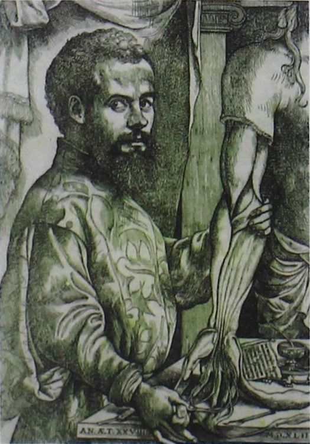
《人体的构造》是解剖史上的一座里程碑，它首次比较精确地描绘了人体结构，书中的插图及内容被后人多次复制引用。
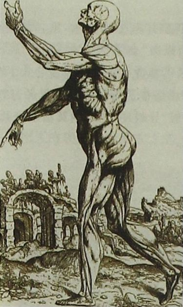
●图是人体的肌肉结构图，选自《人体的构造》。
这本书的发表引起了当时的解剖学家和医生们的震惊，也因违反了当时流行的对人体结构的认识，引起教会的极大不满，维萨里被迫离开了他执教的所在地威尼斯来到西班牙。但教会的魔爪仍不肯放过他，20年后，西班牙宗教裁判所诬陷维萨里用活人解剖，判维萨里死罪。由于国王出面干预，教会才改判维萨里往耶路撒冷朝圣，免于死罪。在归航途中，舰船遇险，年仅50岁的维萨里不幸身亡。
中世纪许多艺术家热衷于人体解剖。意大利著名画家莱昂纳多·达·芬奇（Leonardo da Vinci, 1452—1519）曾解剖过30个不同年龄的男性和女性的尸体，其中10具尸体用于研究静脉。他认为血液对人体起着新陈代谢的作用。他绘制了冠状动脉及其走向，但是没有正确认识到分隔心脏左右部分的房室隔是否有孔道的问题。
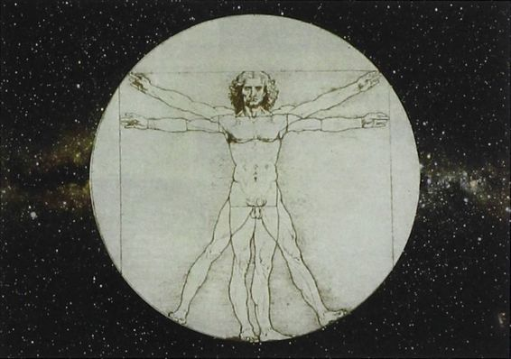
●达·芬奇绘制的人体比例图，被称为“维特鲁威风格的男子”。被认为是世界上最标准的人体比例画图之一。
显然对于艺术家来说，热衷于不登大雅之堂的解剖学，目的是为了更好地表达人体之美，而这种对人体美的追求又与文艺复兴后艺术旨趣的复活有关。古希腊人向来崇尚人体的天然之美，但这种审美情趣在中世纪却遭教会禁欲思想的抑制而长久不见天日。随着希腊之魂的回归，艺术家再度发现人体之美，于是服务于绘画的解剖学成为新宠。
1661年意大利生理学家马塞罗·马尔比基（Marcello Malpighi, 1628—1694），借助改进后的显微镜发现了毛细血管，最先描绘毛细血管的循环。
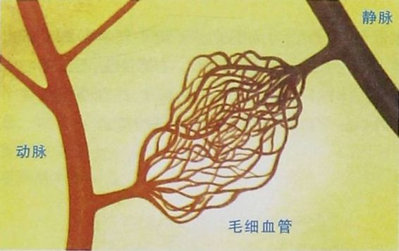
●三种血管关系示意图
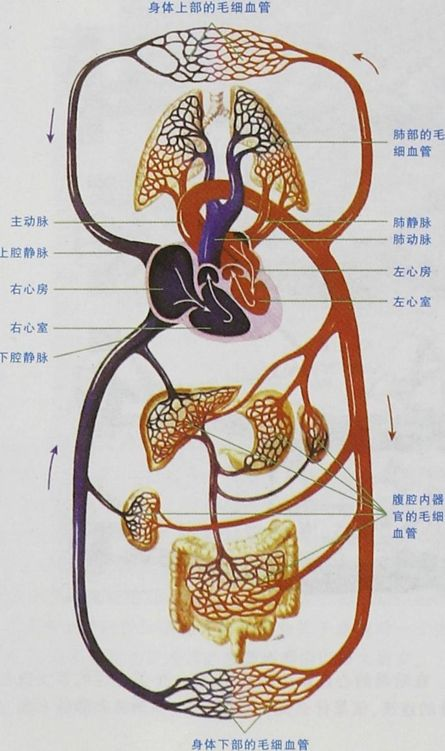
根据哈维的血液循环理论和马尔比基发现的毛细血管网描绘的完整的血液循环图
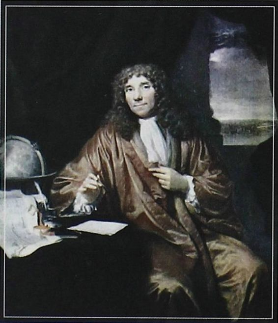
1676年列文虎克（Antonie Van Leeuwenhoek, 1632—1723）证实了毛细血管连接着动脉和静脉。上图为列文虎克像（选自1695出版的著作）
至此，哈维设想的事实被证实。完整的血液循环理论完成了。
尽管哈维没有证明毛细血管的存在，尽管不是他首次提出血液循环的思想，也不是他首先发现了静脉瓣，但是他利用充分的证据和缜密的推理，使得血液循环理论显得十分深刻严密、无可辩驳，令人信服。彻底推翻了盖仑的心血运行体系，开创了生理学、解剖学的新时代。
哈维的贡献是划时代的，他的工作标志着新的生命科学的开始，属于发端于16世纪的科学革命的一个重要组成部分。由于关于心血系统的出色研究（以及关于动物生殖的研究），哈维成为与哥白尼、伽利略、牛顿等人齐名的科学革命巨匠。他的《心血运动论》一书也像《天体运行论》、《关于托勒密和哥白尼两大体系的对话》、《自然哲学之数学原理》等著作一样，成为科学革命时期以及整个科学史上极为重要的文献。